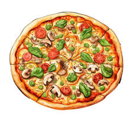

<!DOCTYPE html>
<html lang="en">

<head>
    <meta charset="UTF-8">
    <meta name="viewport" content="width=device-width, initial-scale=1.0">
    <title>VEGETERIAN PIZZA</title>
</head>

<body>

</html><a href="../INDEX.HTML">GO BACK</a>
<h1>VEGETERIAN PIZZA</h1>

<b>
    <p>Vegetarian pizza has become a beloved choice for many pizza enthusiasts, offering a delicious alternative to
        traditional meat-topped varieties. This culinary delight typically features a medley of fresh vegetables that
        not only enhance flavor but also add vibrant colors to the pizza's presentation.

        At its core, a vegetarian pizza starts with a base of dough, carefully rolled out and baked to achieve a crispy
        yet tender crust. The sauce, often a tangy tomato base infused with herbs and spices, serves as a flavorful
        foundation. What truly sets vegetarian pizza apart are the toppings: a colorful array of ingredients like sliced
        bell peppers, juicy tomatoes, earthy mushrooms, sweet caramelized onions, and perhaps some pungent olives or
        artichoke hearts. These vegetables not only offer diverse textures but also a spectrum of tastes that blend
        harmoniously with the cheese.

        Speaking of cheese, a vegetarian pizza typically includes mozzarella or a blend of cheeses, providing a gooey,
        stretchy layer that binds the toppings together. For those who prefer a vegan option, dairy-free cheeses made
        from nuts or soy are increasingly available, ensuring everyone can enjoy this savory dish.

        Whether enjoyed at a bustling pizzeria or homemade in the comfort of one's kitchen, vegetarian pizza caters to a
        wide range of palates and dietary preferences. Its versatility and deliciousness make it a perennial favorite
        among pizza lovers worldwide.</p>
</b>
</body>

</html>